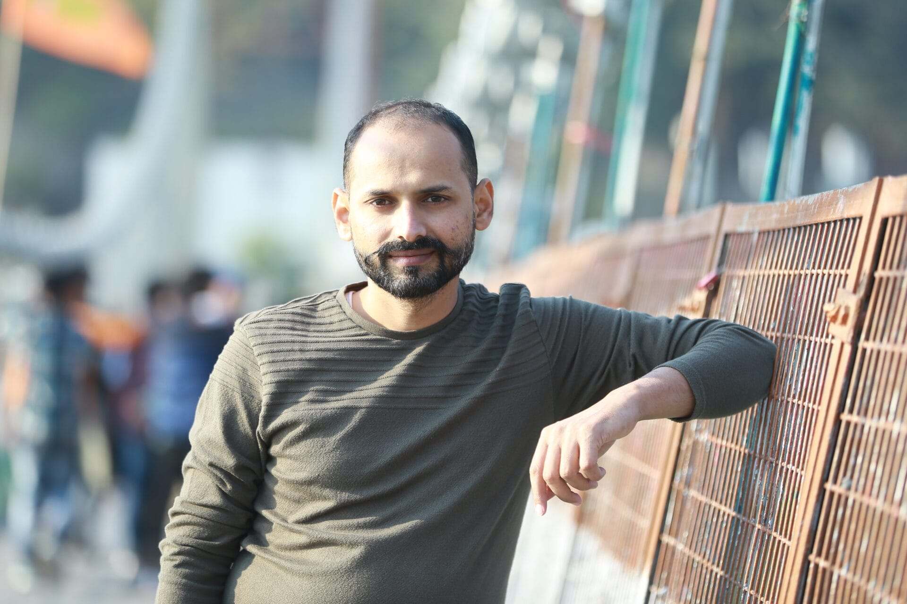

Makarand Mane
WordPress & Shopify Developer · Technical Consultant · Kolhapur, India
Hi, I’m Makarand — a developer and technical consultant. I’ve been building and maintaining websites since 2011. Most of my work sits quietly in the background: reliable WordPress and Shopify sites, careful long-term maintenance, and the small technical decisions that keep a business’s web presence stable.
I run WPGenius , a small studio I’ve been growing for over a decade. Alongside client work, I contribute to the WordPress project — speaking, organizing, and volunteering at meetups and WordCamps in India.
What I do
WordPress Development & Customization
Custom WordPress builds, theme work, plugin customization, performance tuning, and long-term maintenance. I work with growing businesses that need a developer who’ll still be around in two years to answer the email.
Shopify Development
Store setup, theme customization, and storefront refinements for online retailers. I focus on clarity, conversion, and stores that don’t fall over during a campaign.
Website Maintenance & Technical Support
Ongoing updates, security hardening, troubleshooting, and dependable support. Most of my long-term clients started with a “can you take a look at this?” — and stayed.
Technical Consulting
Audits, architectural decisions, server/hosting choices, Proxmox setups, and the honest second opinion you didn’t want but probably needed.
My toolkit
The boring, dependable parts of the web.
- WordPress
- Shopify
- PHP
- MySQL
- JavaScript
- jQuery
- HTML & CSS
- Linux server admin
- Proxmox
Community
I’ve been part of the WordPress community in India for years — as a speaker, organizer, and volunteer at meetups and WordCamps. The community shaped my work; I try to pay that back.
- Speaker & organizer at WordPress meetups
- Volunteer & contributor at WordCamps across India
- Long-time advocate for clean, maintainable open source
Want specific WordCamps featured here? Send me the list and I’ll link them.
Writing
Occasional notes on development, WordPress, and community.
Get in touch
If you need help with WordPress, Shopify, maintenance, or technical consulting — I’d be glad to connect. Send a short note about your stack, goals, and timeline.
- Email makarand@wpgenius.in
- Studio wpgenius.in
- Location Kolhapur, India
- Availability Open for project discussions